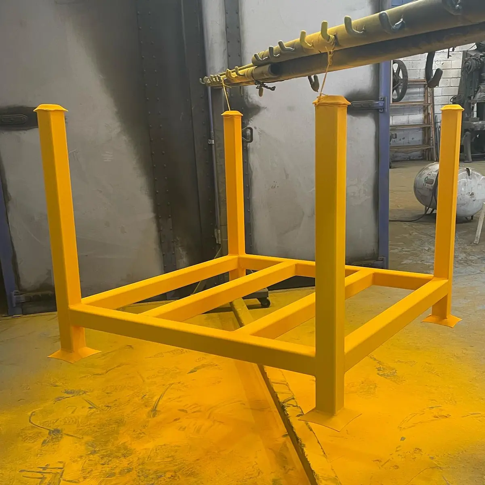

La pintura electrostática texturizada es un acabado en polvo que deja la superficie con relieve en lugar de lisa. Se usa para disimular imperfecciones menores del metal, reducir reflejos y dar un aspecto más robusto a la pieza.
La textura no es un defecto ni un efecto aplicado después: viene del polvo, formulado para generar el relieve al fundirse y curar en el horno. Estas son las ideas clave:
- Qué es: un acabado con relieve visible y táctil, distinto al liso
- Cómo se logra: con polvos formulados para formar la textura durante el curado
- Para qué sirve: disimula marcas menores, reduce reflejos y huellas
- Qué cuidar: es más difícil de limpiar y de retocar que un liso
En esta guía te explicamos las texturas más comunes, dónde se usan y, sobre todo, cuándo no conviene. En Steel Paint somos maquiladores de pintura en polvo: no fabricamos la pintura, aplicamos el polvo del fabricante que corresponde a tu especificación, y las texturas disponibles dependen de ese fabricante. Si apenas conoces la tecnología, empieza por qué es la pintura electrostática y cómo funciona.
¿Qué es la pintura electrostática texturizada y cómo se logra?
La pintura en polvo texturizada (también escrita como pintura electroestática texturizada o electrostatica texturizada, sin acento) se aplica igual que cualquier otro polvo: se carga eléctricamente, se adhiere a la pieza y se hornea. La diferencia está en la formulación, que hace que la película se arrugue, granule u ondule de forma controlada al curar.
No la confundas con el brillo. La textura es relieve; el brillo es cuánta luz refleja la superficie. Muchas texturas se ven mate por el propio relieve, pero son variables distintas, y el color es otra más. La resistencia la define la resina base, algo que vemos más abajo.
Tipos de textura: arrugado, arenado, martillado y más
Estos son los nombres con los que se pide la textura en la industria. Los patrones exactos cambian de un fabricante a otro, por eso conviene confirmarlos con su catálogo.
Arrugado
Forma un patrón de pliegues pronunciados, de ahí que también se busque como "wrinkle". Es de los que mejor disimulan las irregularidades del metal y es común en equipo mecánico y piezas que se manipulan mucho.
Piel de naranja
Es una textura fina y suave, parecida a la cáscara de una naranja. Aporta un relieve discreto que reduce reflejos. No la confundas con la "piel de naranja" que aparece como defecto en un acabado liso: aquí es un efecto buscado y uniforme.
Arenado
Deja una superficie de grano fino, parecida a un papel de lija suave (no es el arenado con abrasivo que se usa para preparar el metal). Se percibe sobria y es popular en piezas visibles que no deben brillar ni mostrar huellas.
Martillado
Imita un metal golpeado a martillo, con pequeñas ondulaciones regulares y a menudo con partículas metálicas. Es una estética decorativa que se ve en herrería y mobiliario. Para ver cómo se comparan con el brillo y los acabados lisos, revisa la guía de tipos de acabados en pintura electrostática.
Para qué sirve el acabado texturizado
Es una decisión funcional además de estética. Estas son las razones por las que se elige la pintura texturizada para metal:
- Disimula imperfecciones menores: rayones leves, marcas de maquinado y pequeñas irregularidades del metal se notan mucho menos que bajo un acabado liso
- Reduce reflejos y huellas: al dispersar la luz, la pieza se ve más uniforme y las marcas de manipulación se notan menos
- Se ve robusto: el relieve da un aspecto industrial y tolera mejor los roces visibles del uso diario
- Ofrece variedad estética: del grano fino al martillado, hay para distintos productos
El metal base sigue contando. Cada uno pide su propia preparación, y lo resumimos en la guía de pintura en polvo para metal.
Texturizado vs liso: diferencias clave
Si dudas entre ambos, esta es la comparación general:
- Liso: muestra las imperfecciones del metal, puede ser muy brillante, se limpia y se retoca con facilidad y da un aspecto fino y uniforme
- Texturizado: disimula las marcas menores, refleja menos la luz y se ve robusto, pero retiene más suciedad y es difícil de retocar
La regla práctica: el liso gana cuando importa la finura o la limpieza, y el texturizado cuando importan la función y el disimulo.
Qué textura elegir según el uso
Para que la decisión sea concreta, estas son las situaciones más comunes y la textura que suele convenir, según el conocimiento general de la industria:
- Piezas que se manipulan o se golpean mucho: arrugado o arenado, que suelen disimular mejor los roces.
- Superficies que deben esconder marcas del metal o de fabricación: arrugado para lo más evidente; piel de naranja o arenado para marcas leves.
- Interiores de equipos, gabinetes y carcasas: piel de naranja o arenado, sobrios y sin reflejos.
- Herrería y mobiliario decorativo: martillado, cuando buscas un aspecto artesanal.
- Exterior: elige la textura por aspecto y la resina por durabilidad, como veremos abajo.
- Piezas que se ensamblan con otras: define la misma textura para todo el conjunto, porque junto a un liso se nota la diferencia.
Dónde se usa la pintura en polvo texturizada
En el noreste, la textura aparece sobre todo donde la función pesa más que el brillo. Esta tabla da ejemplos generales de la industria; en tu caso manda la especificación de tu cliente.
| Sector | Piezas típicas | Por qué se elige |
|---|---|---|
| Maquinaria y equipo | Bastidores, guardas, tableros | Tolera roces y disimula marcas |
| HVAC y gabinetes | Carcasas y gabinetes eléctricos | Esconde marcas de fabricación |
| Herrería y mobiliario | Barandales, bases, soportes | Aspecto robusto, sin reflejos |
| Autopartes | Soportes y brackets visibles | Apariencia uniforme y mate |
Color, exterior y limpieza del acabado texturizado
El relieve dispersa la luz, así que el mismo color suele verse más oscuro y menos uniforme que en liso. Define color y textura al mismo tiempo. El negro texturizado es de los más buscados, por su aspecto sobrio y porque disimula marcas.
En exterior, el uso lo decide la resina y no la textura: pide un polvo formulado para intemperie y revisa las diferencias en tipos de pintura en polvo: epóxica, poliéster e híbrida.
Para limpiar, usa un paño o cepillo suave con agua y jabón neutro, sin abrasivos, y enjuaga bien, porque el relieve retiene polvo. Sigue siempre la recomendación del fabricante del polvo.
Cuándo NO conviene el acabado texturizado
La textura resuelve algunos problemas y crea otros. Considera estas limitaciones antes de elegirla:
- Si la pieza debe limpiarse a fondo: el relieve atrapa suciedad y es más difícil de limpiar que una superficie lisa
- Si buscas un acabado liso de alta gama: la textura no logra ese aspecto, y no se ve igual junto a piezas lisas en un mismo ensamble
- Si esperas que tape cualquier defecto: golpes profundos, soldaduras gruesas y mala preparación siguen notándose. La textura no sustituye la preparación de superficie para powder coating
- Si necesitas retocar sin que se note: igualar un relieve en una reparación es difícil, y el patrón puede variar entre lotes o fabricantes
- Si la pieza tiene ajustes de precisión: el recubrimiento suma espesor y el relieve dificulta controlarlo; revisa esas zonas desde la cotización
Cómo pedir un acabado texturizado a tu maquilador
Para evitar sorpresas, sigue estos pasos al especificar la textura:
- Define el uso de la pieza (interior o exterior) y de qué metal es.
- Pide la referencia del polvo: el código del fabricante y su ficha técnica.
- Valida la textura con una referencia física: un panel de muestra o el catálogo físico del fabricante del polvo, o una pieza que tú aportes como referencia. Una foto en pantalla no basta.
- Define el color y el brillo por separado; para el tono, revisa los colores de pintura electrostática y la carta RAL.
- Mantén el mismo fabricante y el mismo código en todos los lotes de una misma pieza.
Con esos datos, cotizar es más ágil. Para entender qué mueve el precio, revisa qué factores determinan el costo de la maquila, y si aún comparas proveedores, cómo elegir un maquilador de pintura en polvo en Monterrey. Para profundizar, el Powder Coating Institute, la asociación del sector, publica material técnico sobre pintura en polvo.
Preguntas frecuentes sobre la pintura electrostática texturizada
¿Qué es el acabado texturizado en pintura electrostática?
Es un acabado en polvo cuya superficie queda con relieve en lugar de lisa. La textura se forma cuando el polvo, formulado para ello, se funde y cura en el horno.
¿Qué diferencia hay entre pintura texturizada y lisa?
La lisa deja una superficie plana y uniforme, y el brillo es lo que cambia su aspecto. La texturizada tiene relieve visible y táctil, refleja menos la luz y disimula mejor las marcas menores del metal, pero es más difícil de limpiar y de retocar.
¿La pintura texturizada oculta imperfecciones del metal?
Disimula las menores, como rayones leves, marcas de maquinado o pequeñas irregularidades. No corrige golpes profundos, soldaduras gruesas ni piezas mal preparadas, que siguen notándose bajo el acabado.
¿Se puede usar pintura en polvo texturizada en exterior?
Sí, siempre que el polvo esté formulado para exterior. La textura no define la resistencia al sol y a la intemperie: eso lo decide la resina, así que conviene revisar la ficha técnica del polvo antes de elegir.
¿Cómo se limpia y se retoca una superficie texturizada?
Se limpia con un paño o cepillo suave, agua y jabón neutro, sin abrasivos que desgasten el acabado. Retocarla es más difícil que en un liso porque el relieve no se reproduce fácil; lo más confiable es repintar la pieza completa con el mismo polvo.
¿Qué texturas existen en pintura electrostática?
Las más comunes son la arrugada, la de piel de naranja, la arenada y la martillada. La disponibilidad de cada una y de sus colores depende del fabricante del polvo.
Elige la textura con una referencia física
Una textura se entiende viéndola y tocándola. Antes de decidir, apóyate en el panel de muestra o el catálogo físico del fabricante del polvo, o en una pieza de referencia que tú aportes, y define con ellos la textura, el color y el uso. Así eliges por lo que verás en tu pieza y evitas sorpresas al recibir el lote.